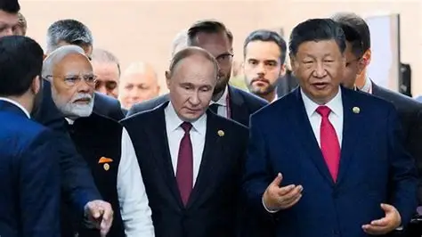

TRUMP AID THRETHEND INDIA OVER RUSSIAN OIL BUYING

Peter Navrro Said,
India is still buying russian ol and diretly provide fund for war and india is respossible for the thousand of ukraninan pepole killed . he even said india will come and said sorry then trump decide what to do with them.
he even said the bramhmins of india take benifit from russian oil but india reject this statement by forgien spoke person . he said india should stop to buy oil from russia other wise they will redy to face more dangerous
consequences. recently even trump said india is our good partner and my personally relationship with modi is very close but they buy oil provide war fund so we need to do it. due to trump this action many think tanker of
the US alredy warn trump on this matter and give clear image to trump that you need to put tariff on china because china is largest oil buyer of russia.
but you target india which is very importanyt for us strategically and diplomatically both . because india is lagerst market. india is largest mannufcaturing hub and trump said companies to manufacture in america this is
completely sense less in america the labour cost is very high compare to india thats why most of the compnies go to china india indonishia. trumps tariff only effect 2.3% od gdp and india started to find new market in south africa
and brics nation . because if modi agrre to open agricultural market then it completely disaster for farmer and agricultural market because overall gdp of india feom this 73.90% depends on the farmers so they due to we have a redline
which never cross any country. so from this we need to see trump additional 25% tariff is not about the russia oil buying itis about to pressurize india to open there market but india never open it . from this stance of india many
country take insperation . also this tariff alredy damage there relation if this continue and if india cancle any agrrement like deffence pact between both then many years US get to restore it .even india goes close to china and russia
more which we never see in histroy this iss because of trump EGO more important over DIPLOMACY. not only trump there minister also say india anything without any respect like trump say dead economy to 4th
largest economy this is ancceptable and thats why many EX offical ,NSA give warning to trump.